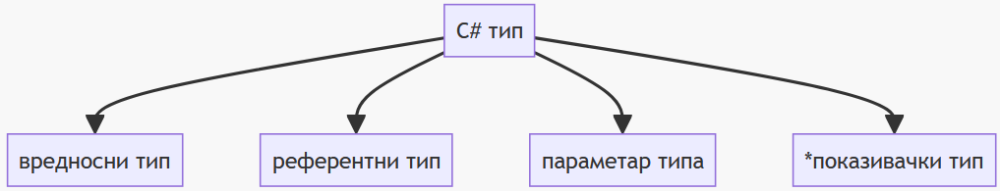
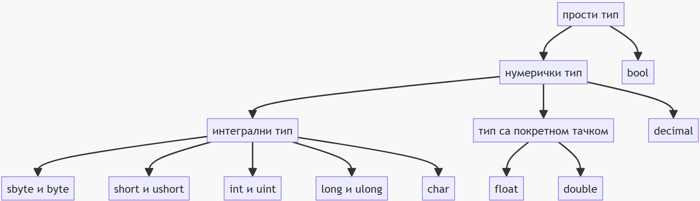

Вредносни типови података¶
Програмски језик C# поседује више уграђених типова података који се могу поделити на вредносне и референтне типове. Променљива вредносног типа садржи инстанцу тог типа. Променљива референтног типа садржи референцу на инстанцу тог типа.
Вредносни и референтни типови могу бити генерички са једним или више параметара типа. Подржан је и показивачки тип (у небезбедном коду) и њега у овом курсу нећеш користити.

Вредносни типови могу се поделити на оне који не могу да имају вредност
null (енгл. non nullable) и оне који могу да имају вредност null
(енгл. nullable).
Ако је T вредносни тип, онда вредносни типови
који могу да имају вредност null могу бити било који вредносни тип
записан као T?. На пример:
int x = 10;
int? y = null;
Вредносни типови који не могу да имају вредност null могу бити структурни или
енумерацијски. Структурни типови могу бити структуре (struct), прости
типови или типови торке (енгл. tuple). Енумерацијски тип може бити нека
енумерација (enum).
Хијерархија простих типова приказана је следећим дијаграмом:

У овој лекцији фокус ће бити на простим вредносним типовима. Са осталим типовима упознаваћеш се у наредној лекцији и касније, током III и IV разреда, по потреби.
Логички тип¶
У програмском језику C логичку вредност „нетачно” представљао си нулом, а логичку
вредност „тачно” бројем различитим од нуле - обично јединицом. Логички тип
података дефинисан је тек у верзији C99 у библиотеци stdbool.h и њега ниси до
сада користио.
Логички тип података bool у програмском језику C# је један од основних
уграђених типова. Вредности, односно литерали логичког типа bool могу бити
true (тачно) или false (нетачно). Ови литерали обично представљају
резултате операција са логичким операторима, операторима поређења или
релационим операторима. Њих ћеш и даље често користити у контролним изразима
наредби if, do, while и for или у условном оператору ?:.
Литералима true и false можеш да иницијализујеш променљиву bool типа…
bool x = true;
Console.WriteLine(x ? "Da" : "Ne"); // Da
bool y = false;
Console.WriteLine(y ? "Da" : "Ne"); // Ne
…или да проследиш bool вредност:
Console.WriteLine(true ? "Da" : "Ne"); // Da
Console.WriteLine(false ? "Da" : "Ne"); // Ne
Интегрални типови¶
У програмском језику C, целобројне вредности представљао си типом int са или
без модификатора signed, unsigned, short и long.
У програмском језику C# нема модификатора целобројног типа. Означене и неозначене вредности у различитим опсезима представљају се типовима из следеће табеле:
Тип |
\([bit]\) |
Опсег |
|---|---|---|
|
8 |
\(-128\ldots 127\) |
|
8 |
\(0\ldots 255\) |
|
16 |
\(-32768\ldots 32767\) |
|
16 |
\(0\ldots 65535\) |
|
32 |
\(-2147483648\ldots 2147483647\) |
|
32 |
\(0\ldots 4294967295\) |
|
64 |
\(-9223372036854775808\ldots 9223372036854775807\) |
|
64 |
\(0\ldots 18446744073709551615\) |
|
32 или 64 |
вредност зависи од платформе |
|
32 или 64 |
вредност зависи од платформе |
И даље ћеш за представљање целобројних вредности у задацима најчешће користити
тип int, тј. означене 32-битне целобројне променљиве и константе.
Целобројни литерали могу се задавати у декадном, хексадекадном и бинарном
бројевном систему. На пример, целобројни литерал 123 у декадном систему може
се записати као 0x7B у хексадекадном, односно као 0b_0111_1011 у бинарном
бројевном систему. Карактер _ назива се сепаратор цифара (енгл.
digit separator). Може се користити у било ком бројевном систему и не утиче
на вредност литерала.
Тип целобројног литерала одређује се по следећим правилима:
Ако литерал нема суфикс, онда је првог типа од наведених типова чијим опсегом вредности може да се представи:
int,uint,longилиulong.Ако литерал има суфикс
Uилиu, онда је првог типа од наведених типова чијим опсегом вредности може да се представи:uintилиulong.Ако литерал има суфикс
Lилиl, онда је првог типа од наведених типова чијим опсегом вредности може да се представи:longилиulong.Ако литерал има суфикс
UL,Ul,uL,ul,LU,Lu,lUилиlu, онда је типаulong.
У програмском језику C знаковним типом char представљао си карактере кодиране
ASCII кодом. Знаковне вредности, означене или неозначене, чувале су се у
меморијским локацијама величине једног бајта, односно 8 бита. Због ограниченог
броја карактера дефинисаних ASCII кодом, користио си само карактере енглеског
алфабета.
Знаковним типом char у програмском језику C# представљају се 16-битни Unicode
UTF-16 карактери, од U+0000 до U+FFFF. То значи да сада можеш користити и
латиничне или ћириличне карактере српске азбуке. Подразумевана вредност char
типа је \0, односно карактер U+0000.
Иако у програмском језику C# типови char и типови short или ushort
међусобно „личе”, практично се знатно разликују. Операције над операндима типа
char могу да дају различите резултате у односу на операције над операндима
типа short или ushort. Тип char подржава операторе поређења, релационе
операторе и инкремент и декремент операторе. Примена аритметичких или битских
оператора над операндима типа char резултоваће вредностима типа int.
Вредност типа char можеш навести као:
знаковни литерал (нпр.
'j'),Unicode прелазну секвенцу (нпр.
'\u006A') која се састоји од секвенце\uнакон које следе четири хексадекадне цифре које представљају кôд карактера,хексадекадну прелазну секвенцу (нпр.
'\x006A') која се састоји од секвенце\xнакон које следе четири хексадекадне цифре које представљају кôд карактера, иликастовањем вредности кода карактера (нпр.
(char)106).
Unicode табелу можеш пронаћи на веб-сајту wikipedia.org или многим другим веб-сајтовима. Табела са специфичним латиничним и ћириличним карактерима српске азбуке дата је у прилогу.
Секвенце знаковних вредности најчешће ћеш користити за формирање стрингова.
Типови са покретном тачком и тип decimal¶
Реалне бројеве, односно бројеве са покретном тачком у програмском језику C
представљао си типовима float, double или long double. Слично, у
програмском језику C# можеш користити следеће типове:
Тип |
\([B]\) |
Опсег |
Прецизност |
|---|---|---|---|
|
4 B |
\(±1.5\times{10^{−45}}\ldots ±3.4\times{10^{38}}\) |
~6-9 цифара |
|
8 B |
\(±5.0\times{10^{−324}}\ldots ±1.7\times{10^{308}}\) |
~15-17 цифара |
|
16 B |
\(±1.0\times{10^{-28}}\ldots ±7.9228\times{10^{28}}\) |
~28-29 цифара |
Вероватно се питаш зашто се у програмском језику C# тип decimal не сврстава у
типове са покретном тачком заједно са типовима float и double, већ се
наводи као посебан нумерички тип? Тип decimal се не сматра типом са покретном
тачком као float и double из неколико разлога:
тип
decimalје дизајниран да обезбеди високу прецизност за финансијске прорачуне. Он користи фиксну тачку са 28 цифара после зареза. Ова прецизност је неопходна за избегавање грешака заокруживања приликом рада са великим износима новца;нуди прецизнију контролу над заокруживањем у односу на
floatиdouble, што је важно за финансијске прорачуне где је неопходно да се осигура да се сваки износ тачно забележи и обрачуна;компатибилан је са типом
decimal(p, s)у SQL Server-у, што олакшава размену података између C# апликација и база података;има низ посебних операција које нису доступне
floatиdoubleтиповима, као што суScale,PrecisionиRound;обично се имплементира коришћењем хардверске подршке за фиксну тачку, што га чини ефикаснијим од
floatиdoubleтипова за операције корисне за манипулацију и форматирање децималних вредности.
Тип реалног литерала одређује се по следећим правилима:
Ако литерал нема суфикс, или има суфикс
dилиD, онда је типаdouble.Ако литерал има суфикс
fилиF, онда је типаfloat.Ако литерал има суфикс
mилиM, онда је типаdecimal.
Приликом записа реалних вредности можеш користити и научну нотацију, где уместо
реалног броја (нпр. 0.0000000012) редом наводиш мантису, карактер е или E
и експонент (нпр. 1.2e-9 или 1.2E-9).